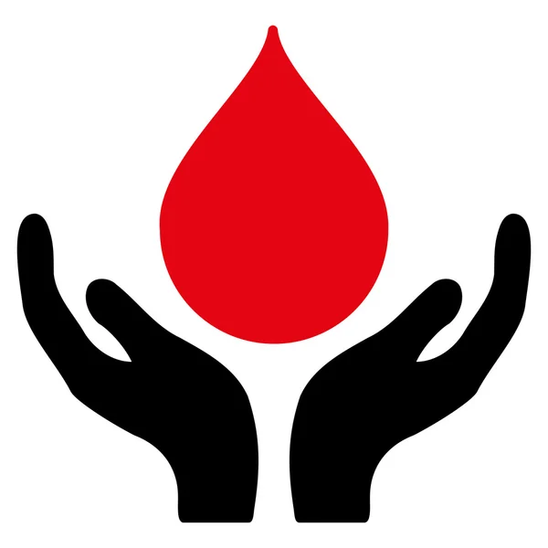
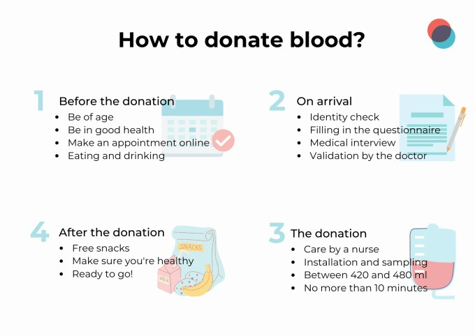
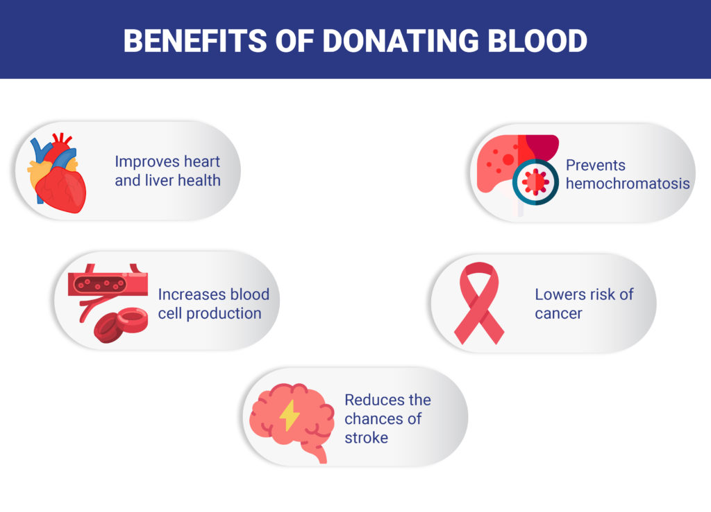

Donor Information
Thank you for your interest in becoming a blood donor. Your donation can save lives! Here’s what you need to know about donating blood.
Eligibility Requirements
- Must be at least 17 years old (16 with parental consent).
- Weigh at least 110 lbs (50 kg).
- Be in good general health.
- Bring a valid ID.
Donation Process
The blood donation process is simple and typically takes about an hour. Here’s what you can expect:
- Registration: Provide your ID and fill out a brief health questionnaire.
- Health Screening: Our staff will check your vital signs and hemoglobin levels.
- Donation Process: The actual blood donation takes about 10-15 minutes.
- Post-Donation: Once the blood collection is complete, the needle is removed, and a bandage is applied to the site. The donor is encouraged to rest for a few minutes and is provided with refreshments (like juice and snacks) to help replenish fluids and sugar levels.
- Recovery and Aftercare: The donor is observed for a short period to ensure they do not have any immediate adverse reactions. The donors are instructed to avoid heavy lifting for the rest of the day, drinking plenty of fluids and monitor the puncture site for any signs of ifection or prolonged bleeding.
Benefits of Donating Blood
There are numerous health benefits of blood donation as well as positive impacts on society. Some of them includes:
- Improves heart and liver health.
- Increases blood cell production.
- Lowers risks of cancer and reduces the chances of stroke.
- Prevents hemochromatosis.
- Saves lives and makes a positive impact on your community.
- Receive a free health screening.
- Feel a sense of accomplishment and pride.